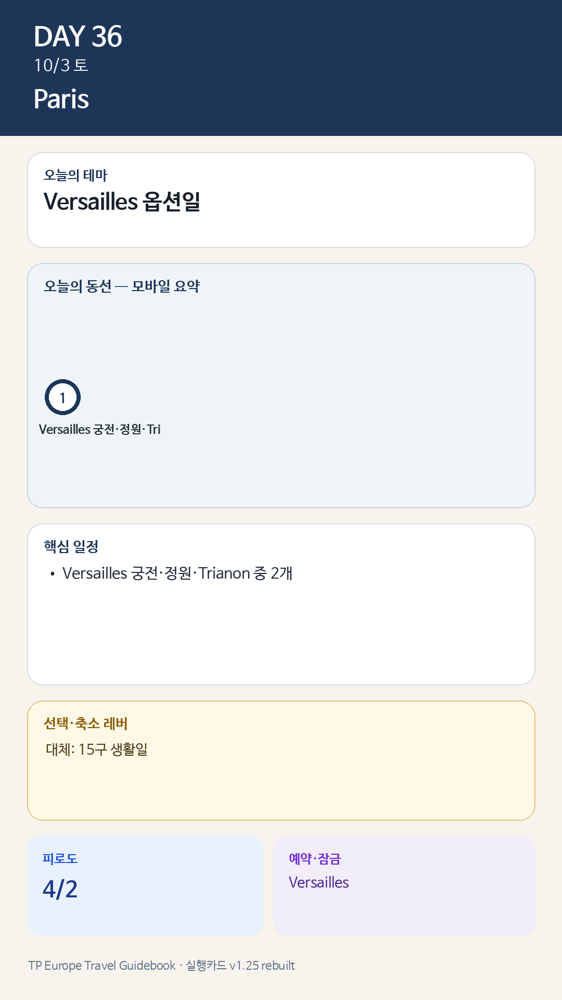

Day 36 · 10/3 토 · Paris
- 핵심 실행
- Versailles 옵션
- 권장 출발
- 07:30–08:00 출발
- 완충
- 입장 45분 전·귀환 후 휴식
시간표
| 시간 | 일정 |
|---|---|
| 07:30 | 숙소 아침 |
| 08:15–09:30 | 문전 이동·RER C 또는 대체열차 |
| 10:00–12:30 | Palace 시간지정 입장 |
| 12:30–13:30 | 피크닉·가벼운 점심 |
| 13:30–16:30 | 정원·Grand/Petit Trianon 중 선택 |
| 17:00–18:30 | 파리 귀환 |
| 저녁 | 숙소식 |
피로도
4/5
이 날의 장소
일자별 시간표와 본문 표기에서 찾은 것이다. 하루의 전부가 아니라 장소 카드가 있는 것만 담는다.
이 날의 메모
근교 옵션 1: Versailles 또는 파리 15구 생활일
A. Versailles — 대표 궁전 하루
핵심 원칙: 궁전·정원·Trianon 모두 ‘완주’하지 않는다. 3개 중 2개를 우선한다.
B. 파리 기본 대체 — 15구 생활일
- Marché Convention 또는 Grenelle 일정 확인
- Rue du Commerce·Convention 생활상권
- Île aux Cygnes·Seine 산책
- Le CasseNoix 저녁 또는 숙소식
피로도: 2/5.
선택 기준
Versailles는 ‘파리 근교 대표성’이 가장 높지만, 이번 여행에서 궁전·역사건축에 대한 관심이 낮거나 비·철도혼잡이 있으면 15구 생활일을 택한다. 취소해도 파리 체류의 완성도는 떨어지지 않는다.
상세 실행 확인
- 최고 리스크
- 주말혼잡·장거리보행
- 우선 삭제
- Trianon/정원 일부
- 대체안
- 15구 생활일
- 식사·휴식
- 현지 조기점심
- 잠금 필요
- Versailles
모바일 카드 이미지

카드의 지도영역은 일정 순서를 보여주는 개요이며 내비게이션이 아닙니다. 실제 도보·운전 경로는 Google Maps에서 다시 계산하세요.